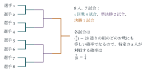

STEP II Specimen paper、第16問
先に進む前に問題を読んでおこう。問題は STEP Support Programme の問題データベースにある： step.maths.org/questions/spec-s2-q16
導入
ウィンブルドン（Wimbledon）では、\(128\) 人の選手がドローに名を連ねる。無作為に2人を選んだとき、その2人がどこかで対戦する確率（probability）はいくらだろうか。各ラウンドで対戦する確率を足し合わせようとするかもしれない。それぞれは、勝ち残る確率と組み合わせで当たる確率の積である。この方法でも求められるが、はるかによい方法がある。試合の数を数えるのである。どの試合も2人の選手の組の間で行われ、試合はちょうど \(127\) 試合ある。対称性（symmetry）により、どの選手の組も、それぞれの試合の対戦カードになる確率は等しい。したがって、求める確率は \(127\) を組の総数で割ったものになる。
この問題は、「正しいものを数える」ことで確率の問題を解く格好の例である。答え \(\frac{1}{2^{n-1}}\) はたった1行で得られる。
取りかかる前に
\(2^n\) 人の選手によるノックアウト方式のトーナメント（knockout tournament）では、何試合が行われるか。（各試合でちょうど1人の選手が敗退する。）
各試合でちょうど1人が敗退し、1人を除く全員が敗退するのだから、試合数は \(2^n - 1\) である。
順を追って解く
段階 1 1回戦
選んだ2人の選手を \(X\) と \(Y\) とする。1回戦では、\(X\) の対戦相手は他の \(2^n - 1\) 人のうち誰である確率も等しいので、 \[\mathrm{P}(\text{出会うのがラウンド } 1) = \frac{1}{2^n - 1}.\]
段階 2 鍵となる対称性
各ラウンドの組み合わせは無作為に決まり、どの試合も公平な硬貨投げで勝敗が決まる。この過程は、ある選手の組を他の組と区別して扱うだろうか。
区別しない。組み合わせは無作為で、どの試合も \(50\)–\(50\) なので、選手の番号を付け替えてもどの確率も変わらない。したがって、特定の試合（たとえば決勝）は、\(\binom{2^n}{2}\) 通りの組のどれの対戦になる確率も等しい。
段階 3 決勝
決勝は特定の1試合なので、それが \(X\) と \(Y\) の対戦である確率は \[\frac{1}{\binom{2^n}{2}} = \frac{2}{2^n(2^n - 1)}.\] である。（検算：2人とも決勝に進む必要があり、そのためには2人が異なる半分の山に入り、それぞれ \(n - 1\) 試合に勝たなければならない。）
段階 4 いずれかの段階で
\(X\) と \(Y\) が対戦するのは高々1回である。このことから、試合ごとの確率を足し合わせてよいのはなぜか。
試合 \(m\) が \(X\) と \(Y\) の対戦であるとき \(1\)、そうでないとき \(0\) をとるものを \(I_m\) とする。\(2^n - 1\) 試合のそれぞれについて \(\mathrm{P}(I_m = 1) = \binom{2^n}{2}^{-1}\) であり、これらの事象は互いに排反（mutually exclusive）である（2人が2回対戦することはない）から、 \[\mathrm{P}(\text{出会う}) = \frac{2^n - 1}{\binom{2^n}{2}} = \frac{2(2^n - 1)}{2^n(2^n - 1)} = \frac{1}{2^{n-1}}. \qed\] ウィンブルドンの場合は \(n = 7\) であり、特定の2人が対戦する確率は \(\frac{1}{64}\) である。検算として、1回戦は \(2^n - 1\) 試合のうち \(2^{n-1}\) 試合を占めるので、\(\frac{2^{n-1}}{\binom{2^n}{2}} = \frac{1}{2^n - 1}\) となり、段階 1 の結果と一致する。

振り返り
試合を数える。試合数 \(2^n - 1\) が鍵となる事実であった。
組の間の対称性。どの選手の組も、特定の試合で対戦する確率は等しい。
試合についての線形性。2人の選手が対戦するのは高々1回なので、対戦する確率は対戦回数の期待値に等しく、試合についての和として表される。
背後にある数学
個数の期待値
段階 4 の議論は、実は期待値（expectation）の計算である。\(X\) と \(Y\) が対戦する回数は、試合ごとに1つずつの指示変数（indicator）の和であり、その期待値（値は \(0\) か \(1\) なので、対戦する確率に等しい）は、各指示変数の期待値の和に等しい。これが期待値の線形性（linearity of expectation）であり、第 9.11 節 や 第 12.4 節 でも用いた。この方法の大きな利点は、ラウンド間の複雑な従属関係をすべて無視できることである。
シード付きのトーナメント
現実のトーナメントはシード（seeded）制である。最も強い選手たちは、終盤のラウンドまで対戦しないように配置される。また、現実の試合は \(50\)–\(50\) ではない。どちらも対称性を壊すので、特定の2人が対戦する確率を求めるのは本格的な計算になる。スポーツをモデル化する統計学者は、各試合の確率を選手のレーティングから推定したうえで、まさにこうした計算を用いてトーナメントの結果を予測する。対称な場合は、現実の効果を測るための基準となるのである。
思考のスキル
確率は多くの場合、数える対象を正しく選びさえすれば、（条件を満たす対象の個数）\(\div\)（同様に確からしい対象の個数）として求められる。ここでは、それが試合と組であった。
何を数えるかを選ぶことこそ、組合せ確率論（combinatorial probability）の技である。大学では、同じ考え方が二重数え上げ（double counting、第 7.9 節）として、また確率的手法（probabilistic method）として現れる。確率的手法では、ある構造の個数の期待値を用いて、その構造が存在することを証明する。
次の一歩
ラウンドごとに。\(X\) と \(Y\) がラウンド \(k\) で対戦する確率が \(\frac{2^{n-k}}{\binom{2^n}{2}}\) であることを直接示し、これらを足すと \(\frac{1}{2^{n-1}}\) になることを確かめよ。
固定された組み合わせ表。代わりに、組み合わせ表が（図のように）あらかじめ固定されていて、すべての選手がそこに無作為に配置されるとする。答えは変わるか。
強い選手。選手 \(X\) がすべての試合に勝つとする。このとき、\(X\) が \(Y\) と対戦する確率はいくらか。
リーグ戦。\(2n\) チームによるリーグ戦（league）で、どの2チームも1回ずつ対戦するとき、試合数はいくらか。これに対応する「対戦する確率」は何か。
さらに学ぶために
Frederick Mosteller, Fifty Challenging Problems in Probability（Dover）。トーナメントの問題も収められている。
David Spiegelhalter, The Art of Statistics（Pelican）。モデル化と予測について。
Joseph Blitzstein & Jessica Hwang, Introduction to Probability（CRC Press、オンラインで無料公開）。指示変数と対称性について。